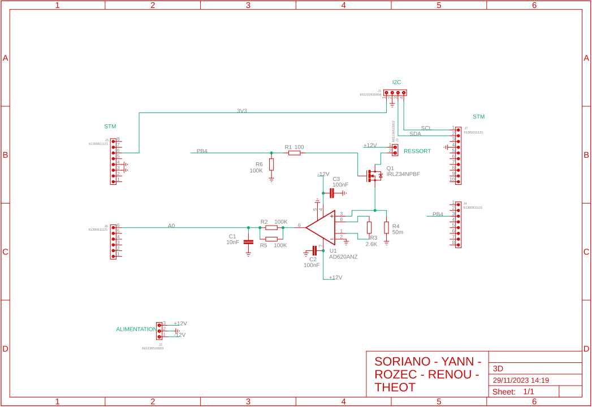

Control of the height of a mass
Structure of the project
General overview
We are a group of 5 students working on this project. The goal is to control the height of a mass, hooked to a shape memory spring, according to a target set by a user from an GUI. To do so, we have a flight time sensor that measures the distance between the mass and the ground. This sensor is connected via I²C to the STM32F4 microcontroller. The board implements a PID controller that serves the spring with a PWM signal. The PWM signal is then amplified by a MOSFET to control the current flowing through the shape memory spring.

Equipment
The basic equipment for this project consisted of:
- Shape memory spring
- Mass
- Gallows
- Flight time sensor
- STM32F411RE microcontroller
Method
We divided this project into multiple steps:
- Testing and getting familiar with the system
- Configuring some microcontroller's peripherals: PWM generation, ADC, Timer, etc.
- Devising the PCB structure and testing remote parts
- Elaborating the PCB on Eagle
- Developing an GUI to interact with the system
- Figuring out PID parameters
- Creating a poster and a web page to present our project
Workload repartition
As mentionned above, we are a group of 5 students. Regarding our preferences, we assign each member of the group different parts:
- Julien: worked on the PCB (Eagle) and Gantt diagram.
- Gentilla: worked with Julien (Eagle) and also on a poster for synthesizing the project.
- Titouan: worked on the GUI (Python).
- Pierre-Nicolas: worked on the PID implementation (STM32).
- Elouan (me): worked on the web page, on the firmware (peripherals configuration) and on the PID algorithm.
Upfront difficulties
The system we aim to serve is a shape memory spring. However, it is very hard to predict the system's behavior because its transfer function changes as the spring temperature increases. Therefore, we will be considering the spring as a black box and we will try to find the best PID parameters by trials and errors. Also, we have to measure the current flowing through the spring and display it on the GUI.
Schema
This schema describes all components and their interactions within the whole system. It was elaborated by Gentilla.

PCB
The
Designing the PCB
Current measurement
To measure current, we use a shunt resistor that we put in serie. It is a very low resistor so that it has no effect on the current. We need to measure the voltage at its ends to know the current flowing through it (so in the spring). However, we use a PWM signal, meaning that the tension at the ends of the shunt resistor is not constant. Therefore, we use a low pass filter to compute the average voltage (voltage perceived by the spring). This average voltage is passed through an ADC to be read by the microcontroller, which sends it to the GUI.
STM32 peripherals
To build our system, we needed to configure some peripherals:
- PWM generation: to serve the spring with a PWM signal.
- ADC: to measure the voltage at the ends of the shunt resistor.
- Timer: to set a sampling period.
- I²C: to communicate with the flight time sensor.
- UART: to communicate with the GUI.
Building the PCB with Eagle
There will be a photo of the PCB when it will have been printed.
PID implementation
In control systems, ideally we know (or can figure out by stimulating it) the behavior of the system we aim to control. However here it is slightly different ...
Command control
The STM32 microcontroller implements a PID that outputs a PWM signal. This PWM signal is input to the transistor that is piloted in an open-closed mode. The duty cycle of this signal directly impacts how much current flows through the spring. We know (from the teacher) that the spring behaves somehow like a low-pass filter (in fact, the spring is a black box). Hence, it will only see the average of the current flowing through it. Then, it is easy to understand that the wider duty cycle, the higher the tension (so the current). It is important to mention that we supply the spring with a 3V source and it takes time to heat up. We have experimented different duty cycle to see how the system behaves. This was aimed at giving us a approximate hint about how fast the spring reacts.
Our main difficultes lie in the fact that we only have control over the elevation of the mass (not the fall) and we don't have a model of the system's behavior.
PI algorithm
As stated, we can only control the rise process of the system (e.g., the spring fold), by tweaking the duty cycle of the PWM signal, even though we do not know exactly its behavior. However, the fall process depends on the surrounding temperature that makes the spring unfold. We have to wait for the spring to cool down to have it go down. Thus, we should avoid overshooting the target height. We remove the derivative \(K_d\) factor as it amplifies the responsivness of the system while degrading the accuracy. Eventually, we are aiming for a PI that makes the mass reach the target as fast as possible without overshooting it. Thus, we only need to tune the proportional \(K_p\) and integral \(K_i\) factors. The \( K_p \) factor will make the system reach the target faster, while the \( K_i \) factor will accumulate the error over time. Moreover, we know that: \[ \delta_e \leq \delta_{max} = 100mm \] \[ \delta_e \leq 0 \implies dc=0\% \implies 0V \] \[ \delta_e=\delta_{max} \implies dc=50\% \implies 1.5V \] We only allow the duty cycle to vary from 0% up to 50% because beyond this value, we noticed that the spring is dramatically less likely to be reversed. Now let's consider the algorithm : \[ u_p = K_p \cdot \delta_e \] \[ u_i = u_i + K_i \cdot u_p \] \[ u_{cmd} = u_p + u_i \] \( \delta_e \) represents the error (in mm) between the current position and the target position. Every ms, we update the PWM duty cycle using the output variation \( u_{cmd} \). This variation defines the new duty cycle of our PWM duty cycle. It is important to note that this is a variation in the command, meaning that it should be in the same order of magnitude as the PWM duty cycle (comprised between 0% and 50%). To make sure the command stay within the right order of magnitude, beyond a threshold of 50% we block the command.
Issues and solutions
After having tested different values of \(K_p\) and \(K_i\), results turned out to be unsatisfying. The problem is that the spring behaves like a hysterisis: one threshold to fold but another one to unfold. This inertia is due to heat accumulation in the spring. Either, the value of \(K_i\) was too low and the system did not reach the target fast enough (several minutes), or it was too high causing the system to significantly overshoot the target. This had the spring oscillate very slowly around the target. We needed to find a another way to increase the accuracy of the system.
After some time, we realised that the problem was mainly due to the fact that, even though we stopped increasing the command after a threshold of 50%, the term \(ui\) kept increasing anyway. This was a problem because when the mass reached the target, the command \(u_{cmd}\) was too high due to an overaccumulation of error. The mass kept rising so long as the accumulated error was unwound. Since our system is sluggish, it takes a lot of time to unwind the error. Hence, the system took too much time to decrease the command (i.e., duty cyle). As a result, we decided to put a cap on the integral term \(u_i\) as soon as the command reaches the threshold of 50%. This significantly improved the accuracy of the system.
This technique is known as integrator windup.
Answered questions:
- What happens when we increase the \(K_p\) and \(K_i\)?
- How can we increase the accuracy of the system?
- ...
PID?
After reflection, we thought of leveraging the \(K_d\) factor to lower the impact of the \(K_i\) factor, especially during the spring rise.
The \(K_d\) factor plays a role in emphasizing sharp variations in the system.
This factor could be relevant because we noticed that after a certain duty cycle threshold (40-50%), the spring skrinks very quickly (i.e., high derivative), which causes the mass to rise fast. This sharp variation in the mass height can be ca^ptured by the derivative component \(u_d\) and can be handled by the derivative factor. However, instead of adding this factor, we could substract it to the command so that when significant variations occur, the command is reduced and the rise slowed down. Otherwise the spring is almost idle, resuting in a \(K_d\) factor that has no influence. \[ u_p = K_p \cdot \delta_e \] \[ u_i = u_i + K_i \cdot u_p \] \[ u_d = K_d (u_d^{n} - u_d^{n-1}) \] \[ u_{cmd} = u_p + u_i - u_d \] \(u_d\) is the derivative component of the command. \(n\) represents the current iteration and \(n-1\) the previous one.
P factor only
We also decided to try a P controller only, to fix the PI to fix the problem of error accumulation. Then when the mass is on the verge of exceeding the target, we switch "instanteniously" to a lower duty cycle. After some tests, the mass stabilizes quite fast on the target (few seconds) and oscillations are quite unsignificant.
Limitations:
- the PWM signal is fixed to be effective in a lukewarm temperature (~20°C) environment. If the environment started to get colder, the PWM would not change because there is no accumulation of error.
- the PWM switches from 10% to 60% within a short amount of time (sharp tension changes) and this might damage the system and the board faster.
Conclusions
As a conclusion, the best option remains the PI controller using the integrator windup method. The P controller using threshold switching is a good alternative but it is not as accurate as the PI controller. Moreover, it involves sharp changes in the PWM signal that might damage the system faster. Finally, from our experiments, the PID controller is the least accurate. I thought the derivative could compensate for the overshooting but it is not the case.
Current loop
By blocking the duty cycle to a certain threshold, we assure that our system will not be supplied with too much current (~0.9A maximum).
PID program
Code will be uploaded soon.
GUI
Communication
Features
- Showing values
- Sending a height instruction
- Real-time display